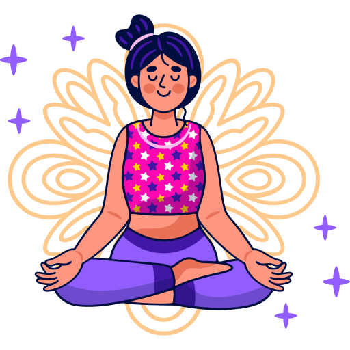

About
Meditation has become increasingly popular as a way to improve mental health and overall wellbeing. In a world that is often stressful and chaotic, meditation provides a calming and centering practice that can help individuals cope with the challenges of daily life.